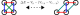

<style> .container{ display: flex; justify-content: center; align-items: center; } .col { flex: 1; } </style> # Big Meeting ### July 2024 #### Tanausú Hernández Yanes --- ## Expansion of dipolar gas in 1D and 2D lattices Main points of research: - Experimentally revelant interaction strengths - Expansion rates - Anisotropy (in 2D) --- ## Extended Bose-Hubbard Hamiltonian ` $$ \begin{align} \hat{H} =& -J \sum_j (\hat{b}_{j+1}^\dagger \hat{b}_j + \mathrm{h.c.}) \\ &+ \frac{U}{2} \sum_j \hat{n}_j(\hat{n}_j - 1) \\ &+ \sum_{i<j}^\mathrm{cutoff} \frac{V_{ij}}{|i-j|^3}\hat{n}_i \hat{n}_j, \end{align} $$ ` --- ## Initial assumptions about the model - $J \ll U, V$ - $U \to \infty$ --- ## Brief Reminder of Perturbation Theory  Note: We are used to perturbation theory as a method to correct eigenenergies only. But it also allows to project a given Hamiltonian in a reduced Hilbert space depending on the perturbation strength. Example of t-J model. --- ## Isotropic Expansion of 2x2 cluster $J = 1 Hz, V = 10 J, \theta= 0, \phi = 0$  </br> <img src='img/expansion_iso.png' height='350'/> --- ## $U < \infty$?  --- ## Resonant states in 1D Can we find states of equal energy to that of a cluster? <!-- --> --- ## Resonant states Values of $U$ where, at least, one resonant state exists at a given perturbation order (number of hops):  Notes: In reality, states that are not strictly resonant will also be populated depending on the perturbation strength. Moreover, long-range tail should increase number and variety of resonances. --- ## Expansion for different U/V  $J=1, V=10J, N =4, L = 20$ --- ## Short time scales, Larger V  $J=1, V=50J, N = 4, L = 12$ --- ## What happens to the expansion when we increase the number of particles? --- ## First passage test  --- ## First passage  --- ## First passage (with MPS)  --- ## Is this applicable to other results? --- ## Quasi Many-Body Localization DOI: 10.1103/PhysRevLett.124.010404  $V = 50J$ --- ## Quasi Many-Body Localization $V = 50J$  --- ## Dimerization resuts DOI: 10.1103/PhysRevB.92.180406  --- ## Inhomogeneity and IPR DOI: 10.1103/PhysRevB.92.180406  --- ## Inhomogeneity and IPR  --- ## Next steps - Increase $N$ - Increase $V$ - Hilbert space shattering - Write up